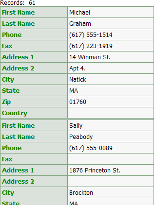
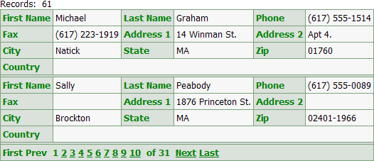
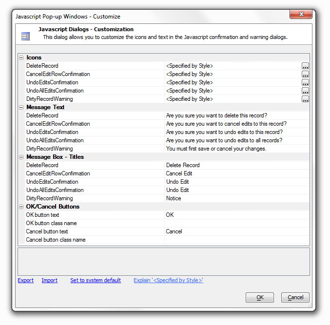
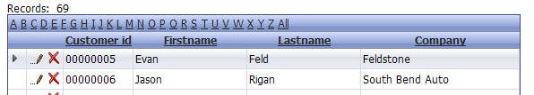
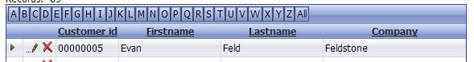
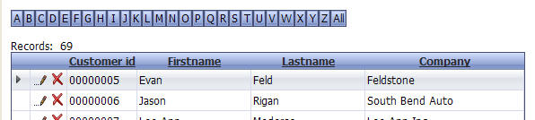
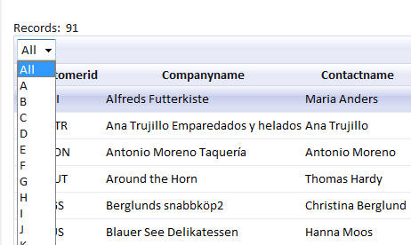
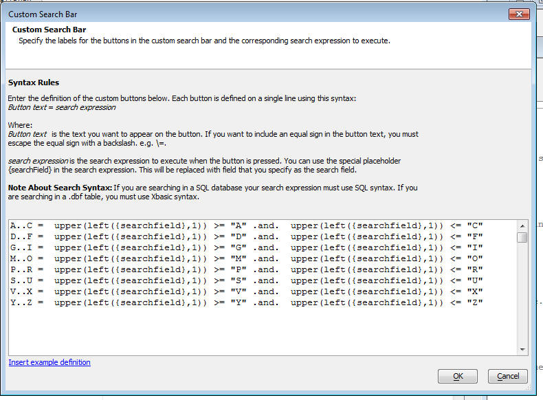

Grid Properties in Detail
- Ajax
-
Layout Options
- Class map
- Resolve abstract CSS class names
- Style name
- Style overrides for Javascript elements
- Repeating columns
- Rows of data
- Add records only
- Show Confirmation Message
- Confirmation Message Template
- Rows of data when search active
- Number of 'Layout' Columns
- Suppress empty rows
- Show title
- Title
- Font size
- Has 'Records Per Page' selector
- 'Records Per Page' selector choices
- 'Records Per Page' template
- Highlight row on hover
- Highlight row on select
- Has checkbox select column
- Has row selector column
- Can collapse grid?
- Customization
- Master Template
- Shading and Dividers
- Column Titles and Sorting/Scrolling Options
- Record Navigator/Grid Toolbar
- Quick Search
- Has Quick Search
- Position
- Alignment
- Field(s)to search
- Allow QBF style
- Search style
- Control type
- Has 'Clear QuickSearch' button
- Clear QuickSearch' button label
- Initial selection
- Control inline style
- Textbox size
- Textbox maximum length
- Search button label
- Quick Search label
- Quick Search label style
- Has freeform layout
- Search rules
- Linked Grids/Content
- Tree-control Record Navigator
- Alternate Views (includes Google Map and Chart
- Action Buttons
- Group Breaks
- Multiple Named Layouts
- Row Expander
- Query by-Example Row
- 'Alphabet Buttons/Custom Buttons' Search
- Freeform Edit Regions
- Security
- Miscellaneous
- Use legacy date picker
- Date format
- Switch year
- Date picker- day names
- Date picker - first day of the week
- Date picker - month names
- Date picker - 'Close' button text
- Search highlighting
- Xbasic function declarations
- Xbasic Linked files
- Xbasic .aex files
- A5W Include files
- Additional Grid styles
- Local CSS definitions
- CSS linked files
- CSS (Font) Icons
- Language definitions
- Text dictionary tags
- Active language
- Remove un-consumed language tags
- Linked resources from child Grids
- Published session variables
- Help Table definition
- Field help window style
- Auto-refresh Grid
- Javascript - Row Events
- Javascript - System Events
- Javascript - Other
- Javascript Actions
- Advanced
|
Ajax
|
Layout Options
|
Layout Option Properties
- Class map
- Resolve abstract CSS class names
- Style name
- Style overrides for Javascript elements
- Repeating columns
- Rows of data
- Add records only
- Show Confirmation Message
- Confirmation Message Template
- Rows of data when search active
- Number of 'Layout' Columns
- Suppress empty rows
- Show title
- Title
- Font size
- Has 'Records Per Page' selector
- 'Records Per Page' selector choices
- 'Records Per Page' template
- Highlight row on hover
- Highlight row on select
- Has checkbox select column
- Has row selector column
- Vertical alignment of controls in columns
- Can collapse grid?
Class map
Loads the Class Map Overrides Dialog. Allows you to override the way in which any of the Abstract CSS Class Names are mapped to Physical Class Names. When the Component is designed, all of the HTML controls in the component use Abstract CSS Class Names (e.g. [class.gridPartInput]). When the Component is run, the Absrtact CSS Class Names are converted to Physical CSS Class Names (e.g GlassBlueInput). The Class Map is used to convert Abstract CSS Class Names to Physical Class Names
Resolve abstract CSS class names
|
Style name
|


The MobBlue style for use with Mobile devices

GrOlive Style
Style overrides for Javascript elements
|
Repeating columns
|

Three Repeating Columns on a Form (Columnar) Grid

Three Repeating Columns in a Stacked Columnar Grid
|
Repeating columns |
tmpl.RepeatingColumns as N |
Rows of data
|

10 Rows of data on a Tabular grid
|
Rows of data |
tmpl.rows as N |
Using Row Spacers for Control Positioning
When designing a dialog component or a grid component with columnar
formatting (where the Layout
Options > Number of "Layout" Columns property
is greater than 1), you may position controls by inserting row after
controls.
The following example shows the effects of adding column spacers. In this case the grid has the following properties:
-
Layout Options > Number of "Layout" columns is set to 4
-
Layout Options > Rows of data is set to 2
The grid has 10 fields. This is the default layout of the grid.

After setting Layout Options > Number of "Layout" columns to 4.

After setting Row Properties > Column span to 2 for Firstname, Lastname, Phone, and Fax.

After placing row spacers after the Lastname and Fax fields and setting the Label Properties > In-line style of the City and Country fields to width:1.5in;.

See Also
Using the Number of "Layout" Columns Feature
Add records only
|

Users Enter Information Only
Show Confirmation Message
|
Confirmation Message Template
|


{RecordCount} counts the number of records submitted.
Rows of data when search active
|
Number of 'Layout' Columns
Only available in Form(Columnar) and Stacked Columnar options, as set in the Component Type page.
|
Number of "Layout" columns |
Defines how to display multiple columns in a columnar grid. tmpl.LayoutColumns as N |
Using the Number of "Layout" Columns Feature
When designing a grid component with columnar formatting or a dialog
component, you may change the Layout Options > Number
of "Layout" Columns property.
For example, this column grid shows the default behavior, where the Layout Options > Number of "Layout" Columns property is set to 1.
Here the Layout Options > Number of "Layout" Columns property is set to 2.

Here the Layout Options > Number of "Layout" Columns property is set to 3. Note how the controls wrap from left to right, then top to bottom.

After the Layout Options > Number of "Layout" Columns property is set to a value greater than 1, you can further position the controls using:
Breaks - a break before or after a control forces the start of a new row
Frames - a frame groups fields together inside a box, which may occupy one or more columns
Colspan - the colspan value specifies the number of layout columns a control should use
Column Spacers - a column spacer inserts a blank column after a control
Row Spacers - a row spacer inserts a blank row after a control
Merges - a merge groups adjacent controls together, so that they use a single common heading label
Suppress empty rows
|
Suppress empty rows |
Default = .T. Indicates whether or not to hide empty rows if a query returns fewer records than the number of rows in the grid. |
Show title
|
|
Show title |
tmpl.show_title as L |
Title
|

Changing HTML in the Title property
|
Title |
The title of the web component. tmpl.title as C |
Font size
|

|
Font size |
tmpl.FontSize as C |
|
Category |
Options and Description |
|
Snaking style |
Default = "TBLR". Defines the organization of records when repeating columns is greater than 1. The options are:
tmpl.snaking as C |

Has 'Records Per Page' selector
|

Records per Page Selector
'Records Per Page' selector choices
|

Set row choices
'Records Per Page' template
|
Highlight row on hover
|

A row where the cursor position is highlighted
Highlight row on select
|
Has checkbox select column
|


Checkboxes added to rows

Checkbox Bubble Help
Has row selector column
|

Row selector column
Can collapse grid?
|


Title bar with grid collapsed

Title bar with grid open.
Customization
|
Customization Properties
'No records found' message
Specify the text of the message to display if a query does not return any records. Clicking the button will load the HTML editor
|
"No Records found" message |
Default = "No records in query". Specifies the text of the message to display if a query does not return any records. tmpl.no_records_message as C |
'Total records' message text
Specify the template for the 'Total records' message. {Total_Records} is a place holder for the number of records in the query
|
"Total records" message text |
Default = " Records: {Total_Records} " Specifies the template for the 'Total records' message. {Total_Records} is a place holder for the number of records in the query. tmpl.total_records_row as C |
'Total records' message position
Specify the position of the text showing the number of records in the current query.
|
"Total records" message position |
Default = "Above Grid". Specifies the position of the text showing the number of records in the current query. The options are:
tmpl.total_records_row_position as N |
Display title before existing records
Display a title before the first record.
|
Display title before existing records |
Enables the display of the existing records title. tmpl.HasExistingRecordsTitle as L |
Existing records title
|
Existing records title |
A title that appears after the column or row titles, but above the data in the grid. tmpl.ExistingRecordsTitle as C |
Display title before new records
|
Display title before new records |
Enables the display of the new records title. tmpl.HasNewRecordsTitle as L |
New records title
|
New records title |
A title that appears after existing data in the grid, but above the rows used to enter new records. tmpl.NewRecordsTitle as C |
Table tag inline style
Specify the inline style for the Grid's <table> tag. Clicking here loads the style editor
Table tag attributes
Specify optional attributes to insert into the Grid's <table> tag
|
Category |
Options and Description |
|
Row separator HTML |
HTML code that customizes the grid's row or column separator. tmpl.row_separator as C |

A grid with customized Existing Record Title, New Record Title, and row separators.
Javascript windows
Loads the Javascript Pop-up Windows - Customize Dialog. This allows you to customize the icons and text in the Javascript confirmation and warning dialogs. Icons, Message Text, Message Box - Titles, and OK/ Cancel Buttons
You can customize the messages and icons used in the the Javascript
dialogs. For example, the Delete Record confirmation dialog shown below has
been customized:

To customize the Javascript dialogs, click the smart field for the 'Javascript windows' prompt in the 'Customization' section in the Grid Properties pane.

Master Template
|
Use a master layout template
|
Master Layout Template Style
|


Tab Container - Tabs on top.

Tab Container - Tabs on Bottom with grid pane open

Tab Container - Tabs on Left with Detail open

Accordion Container with Detail Open
Search pane Label
|
Search pane Label

Modified Search pane Label
Grid pane Label
|

Grid pane label
Detail View Label
|

Detail pane label
Modified detail pane label
Accordion Style
|


Multiple accordion panes open at once
Initial open Panes
|
Shading and Dividers
|
Shading and Divider Properties
- Alternate Row Shading
- Alternate Column Shading
- Row Separator
- Conditional Style (Server-Side)
- Conditional Style (Client-Side)
Alternate Row Shading
|
Alternate row shading |
Default = .F. Specifies if alternate bands of rows should be shaded in different colors. tmpl.alternate_bands as L |
Alternate Column Shading
|
Alternate column shading |
Default = .F. Specifies if alternate bands of columns should be shaded in different colors. tmpl.alternate_column_bands as L |
Row Separator
|
Row separator |
Default = .T. Whether there should be a row separator line between rows. tmpl.has_row_separator as L |
|
Category |
Options and Description |
|
Even row band size |
Default = 1. The number of rows to have the even row color. tmpl.even_band_size as N |
|
Odd row band size |
Default = 1. The number of rows to have the odd row color. tmpl.odd_band_size as N |
|
Even column band size |
Default = 1. The number of columns to have the even column color. tmpl.even_column_band_size as N |
|
Odd column band size |
Default = 1. The number of columns to have the odd column color. tmpl.odd_column_band_size as N |

A grid with optional alternate column shading. The record navigation control displays above the grid.
Conditional Style (Server-Side)
Conditional Style (Server-Side)
Grid Components - Server Side - Dynamic Image, Conditional Field Style and
Conditional Row Style

Conditional Style (Client-Side)
Column Titles and Sorting/Scrolling Options
|
|
- Column titles position
- Suppress titles if no records
- Sorting style
- Reset page number on sort
- Grid body can scroll
- Fixed column widths
Column titles position
|
Column titles position |
Specifies the position of the column titles. The options are:
tmpl.show_column_titles as N |
Suppress titles if no records
Sorting style
|
Sorting style |
Specifies the sorting style of the columns. The options are:
tmpl.sort_style as N |
Reset page number on sort
|
Reset page number on sort |
Specifies whether to display page 1 when sorting records. tmpl.reset_page_number_when_sorting as L |
Grid body can scroll
Fixed column widths
To support a common design pattern used in mobile applications (e.g. Gmail on the iPad or iPhone), the Grid now has a new option for scrolling the Grid body section while the title and footer remain fixed in place.
Record Navigator/Grid Toolbar
|
- Record navigator style
- Record navigator position
- Suppress record navigator bar/footer if no records
- Record navigator layout
- Suppress footer if only one page
- Export to Excel/Ascii
- Help window
- Toolbar 'Action Buttons'
- Customize Grid toolbar template
Record navigator style
Record navigator position
|
Record navigator position |
Specifies the positions of the controls that move forwards and backwards through pages of records. The options are:
tmpl.RecNav.Page_Numbering_Style as N |
Suppress record navigator bar/footer if no records
Record navigator layout
|
Record navigator layout |
Defines the style and
layout properties of the record navigation controls. Click tmpl .RecNav.Page_Numbering_Style as N .PagesTemplate_wout_PageCount as C .Show_Page_Count as L |
Record Navigator Layout
Page Navigator - Direct Page Navigation
Property name: 'Record navigator layout' ('Properties' pane)
You can now select the target page by typing the page number into an edit box and pressing Enter. The benefit of this method of page navigation is that it gives you direct access to any page in the Grid. By contrast, the V9 and earlier technique of providing page links can only allow you direct access to a limited number of pages that are close to the current page.
To turn on this feature, open the 'Record navigator layout' genie and check the 'Use type-in box for page navigation' checkbox.
|
|
|
Setting the page navigation style |
|
|
|
Record navigator showing type-in box for page navigation |
|
|
|
Record navigator showing V9 style page links. |
Suppress footer if only one page
|
Suppress if only one page |
Determines whether to show the navigator if there is only one page. tmpl.RecNav.SuppressIfOnlyOnePage as L |
Export to Excel/Ascii
Help window
Toolbar 'Action Buttons'
Customize Grid toolbar template
|
Category |
Options and Description |
|
First Record Label |
Defines the text that appears for the first record label. tmpl.RecNav.First_Label as C |
|
Next Record Label |
Defines the text that appears for the next record label. tmpl.RecNav.Next_Label as C |
|
Previous Record Label |
Defines the text that appears for the previous record label. tmpl.RecNav.Prev_Label as C |
|
Last Record Label |
Defines the text that appears for the last record label. tmpl.RecNav.Last_Label as C |
|
Show First Record Image |
Determines whether an image replaces the first record label. tmpl.RecNav.Has_First_Button as L |
|
Show Next Record Image |
Determines whether an image replaces the next record label. tmpl.RecNav.Has_Next_Button as L |
|
Show Previous Record Image |
Determines whether an image replaces the previous record label. tmpl.RecNav.Has_Previous_Button as L |
|
Show Last Record Image |
Determines whether an image replaces the last record label. tmpl.RecNav.Has_Last_Button as L |

The Webform Style Builder changed the column headings and background colors of the grid's stylesheet. The Webform Button Genie modified the navigation buttons, which are now located both above and below the grid.
The Record Navigator Designer
The Record Navigator Designer allows you to customize and create new record navigation button sets.
To define the record navigation controls on your web component.
-
Open the selected grid component from the Web Projects Control Panel.
-
Display the Grid > Properties page.
-
Make sure that the Record Navigator > Record navigation position value is not set to "No navigation bar".
-
Click
 or in
the Record
Navigator > Record
navigation layout field
to open the Record
Navigation Designer.
or in
the Record
Navigator > Record
navigation layout field
to open the Record
Navigation Designer.

-
Optionally, select a format in the Pre-Defined Format region.
-
Optionally, select Custom layout design in the Pre-Defined Format region.
-
In the Customize Links region place checkmarks to the left of the link buttons that you want to display.
-
For each link button you display, optionally specify the text label to display.
-
-
Optionally, make a selection from the Page numbers and links region. The options are:
-
No page numbers:

-
Current page only:

-
Current page and target page links:

-
-
Optionally, change the Number of links to display. The maximum is 10.
-
Optionally, check Show page count. Page counts are visible in two of the three examples above.
-
Optionally, edit the Template for page number. Leave the {PageNumber} and {PageCount} fields unchanged.
-
Optionally, select a different alignment of the navigator buttons from the Justify Record Navigator list. The options are:
-
"Left"
-
"Center"
-
"Right"
-
-
Optionally, check Use images for links.
-
Optionally, check Show disabled controls.
-
Optionally, select a different style sheet from the Style drop-down list.
-
Click OK to save your changes or Cancel to discard your changes.
See Also
Quick Search
|
- Has Quick Search
- Position
- Alignment
- Field(s)to search
- Allow QBF style
- Search style
- Control type
- Has 'Clear QuickSearch' button
- Clear QuickSearch' button label
- Initial selection
- Control inline style
- Textbox size
- Textbox maximum length
- Search button label
- Quick Search label
- Quick Search label style
- Has freeform layout
- Search rules
Has Quick Search
|
Has Quick Search |
Enables the Quick Search feature. tmpl.HasQuickSearch as L |
Position
|
Position |
Specify where the Quick Search control should be placed. "In Grid" will display the Quick Search as part of the Grid part. "Above Grid" will display it as a separate control above the Grid. tmpl.QuickSearch .QuickSearchPosition as C |
Alignment
|
Alignment |
Specify if the Quick Search should be "Left", "Center", or "Right" aligned within the Grid. This property is available only applies if Position is set to "In Grid". tmpl.QuickSearch .QuickSearchAlign as C |
Field(s)to search
|
Fields(s) to search |
Specify the field(s) in the Grid part to search. If you select more than one field then Alpha Five will search in all of the specified fields. For example, if you specify Firstname, Lastname, and Company, and then search on "John", the Application Server will search for "John" in all three fields and return records containing "John" in any of these fields. tmpl.QuickSearch .FieldToSearch as C |
Allow QBF style
|
Allow QBF style |
Enables QBF style. QBF style causes the search argument "A,B,C" to search for A, B, or C. The search argument "A..C" searches for entries between A and C. The search argument "C.." searches for entries greater or equal to C. 'The search argument "..C" searches for entries less than or equal to C. tmpl.QuickSearch .AllowQBFStyleSearch as L |
Search style
|
Search style |
Specifies how the data should be searched. The options are:
tmpl.QuickSearch .SearchStyle as C |
Control type
|
Control type |
Specifies the control type for the Quick Search.
tmpl.QuickSearch .ControlType as C |
Has 'Clear QuickSearch' button
Clear QuickSearch' button label
Initial selection
|
Initial selection |
Specifies the initial selection in the Quick Search. Leave this property blank if all records should be shown when the Grid is initially displayed. For example, say that your Quick Search does searches on a State field, and when the Grid is displayed initially, you want to show records for "MA". tmpl.QuickSearch .InitialSelection as C |
Control inline style
|
Control inline style |
Overrides the style for
the Quick Search control. Click tmpl.QuickSearch .Check box.InLineStyle as C .Dropdownbox.InLineStyle as C .Radiobutton.InLineStyle as C .Textbox.InLineStyle as C |
Textbox size
|
Textbox size |
Only applies if the Control type property is set to "TextBox". Sets the width of the textbox control. tmpl.QuickSearch .Textbox.Size as N |
Textbox maximum length
|
Textbox maximum length |
Only applies if the Control type property is set to "TextBox". Sets the maximum width of the text that can be entered into a textbox control. Set to -1 for no limit. tmpl.QuickSearch .Textbox.MaxLength as N |
Search button label
|
Search button label |
Specifies the label for the Search button. Applies only if the Auto Submit property is set to False. This is the button that the user clicks to perform the Quick Search. tmpl.QuickSearch .SearchButtonLabel as C |
Quick Search label
|
Quick Search label |
Specify the label for the Quick Search. This label appears to the left of the Quick Search control. tmpl.QuickSearch .Label as C |
Quick Search label style
|
Quick Search label style |
Overrides the style for
the Quick Search lable. Click tmpl.QuickSearch .labelInLineStyle as C |
Has freeform layout
|
Has freeform layout |
Specifies if the Quick Search has a freeform layout. This will allow you to specify any HTML for the text that surrounds the Quick Search. tmpl.QuickSearch .HasfreeFormLayout as L |
Search rules
The Quick Search (V7) feature is an alternative to putting a Search Part on a Grid. It takes up less real estate than the Search Part, but does not have all of its options. There are some features, however that exceed the capabilities of a Search Part. In particular, you can auto-submit the search when a value in a dropdownbox, radio button or check box control changes. For example, you might have a Quick Search on a State field. You would have a dropdownbox showing all states. When the user makes a new selection in this dropdownbox, a new search runs immediately, without the user having to click a Search button.
Refer to Defining a Quick Search for instructions.
NOTE : If you include a Search Part in addition to a Quick Search, then the Search Part will perform searches within the subset of records selected by the Quick Search.
|
Category |
Options and Description |
|
Choices |
The choices property is available if the Control type is "Dropdownbox", "RadioButton", or "Check box". Refer to Defining Choices for Check Boxes, Radio Buttons, and Drop Down Lists. tmpl.QuickSearch .Check box.Choices as C .Dropdownbox.Choices as C .Radiobutton.Choices as C |
|
Has ShowAll radio button |
Only applies if the Control type property is set to "Radiobutton". Specifies if the radio buttons should include a button to show all records. This is necessary to "turn off" the search after you have done a quick search. With other control types, you can turn off the search by doing a search on a blank value. tmpl.QuickSearch .Radiobutton.HasShowAllButton as L |
|
ShowAll button label |
Only applies if the Control type property is set to "Radiobutton". Defines the label for the "ShowAll" radio button. tmpl.QuickSearch .Radiobutton.HasShowAllButton as L |
|
Dropdownbox height |
Only applies if the Control type property is set to "DropDownBox". Specifies the height of the dropdownbox. If the height is greater than 1, you can allow the user to select multiple entries. tmpl.QuickSearch .Dropdownbox.Size as N |
|
Dropdownbox select style |
Only applies if the Control type property is set to "DropDownBox". Specifies if the user can select multiple entries, or just a single entry. The choices are:
tmpl.QuickSearch .Dropdownbox.SelectStyle as C |
|
Orientation |
Only applies if the Control type property is set to "Radiobutton" or "Check box". Specifies the orientation of the Quick Search control. The options are:
tmpl.QuickSearch .Check box.Orientation as C .RadioButton.Orientation as C |
|
Auto submit |
Only applies if the Control type property is not set to "TextBox". Specifies whether, when the user makes a selection in the Quick Search, the search be performed immediately or when the user clicks the "Search" button? tmpl.QuickSearch .AutoSubmit as L |
|
Freeform layout |
Applies only if the Has freeform layout property is set to True. Specifies the freeform layout for the Quick Search. You can specify any HTML for the text that surrounds the Quick Search. tmpl.QuickSearch .freeFormLayout as C |

A grid with Quick Search. This search has a predefined set of search values that are implemented with radio buttons.
Linked Grids/Content
|
Has linked Grids or other content
Linked Content Definition
You can have as many linked content sections as you want can place them in a freeform edit region anywhere in the grid, it doesn't matter, completely up to your control
add arbitrary name - ex PRIMARY can have as many of these as you want
click define linked content
click add grid
first grid you want to link would be order
click OK
Click Parent field and then customer ID field
Click add grid
add customersbycountry grid
link its parent field to the country field
Set initial Grid to display to 1. This will be the first grid to appear
Choose whether you want to display the grid as a tab control or an accordion control.
Choose your tab location, if you have a tab control - top, bottom, left or right.
Click edit freeform edit regions button to place the content on the component. Select bottom to put it underneath the grid
add a break </br> to put some space between the linked grid and the grid part. then click on the Available placeholder for the linked grid you created.
Run it
The image below shows a Customer grid. The last cell in the Grid contains an embedded, linked Grid showing the orders for that customer.
The embedded Grids are rendered by making subsequent Ajax callbacks after the parent Grid has rendered. This means that the embedded Grids do not slow down the initial rendering of the parent Grid.

Lock linked content window
Tree-control Record Navigator
|
Alternate Views (includes Google Map and Chart
|
Web Grid Alternate Views
To enable Alternate
Views,
check "Has Alternate
Views"
in the grid properties.

Then choose the alternate view and edit its properties. Here are the
properties for a Map alternate view:

In the main view properties, you can choose how the views are organized. The
options include tabs and accordions in addition to showing all views.

If you don't want to limit the alternate view to the typical small size of a
tabular grid page, you can set the grid's Rows of data when search active to
0, and then set the maximum number of rows per page to a larger but
reasonable number. In this case we have chosen 200 points.

With these settings, the map alternate view will only show 10 markers before
a search, and will show a maximum of 200 markers after a search. So, for
example, after searching for airports in Massachusetts, the alternate map
view shows all 67 Massachusetts airports.

See Also
Google Map Component
Group Breaks
|
Has group breaks
Can toggle visibility of groups on a click, set icons that indicate whether a group is open or closed. Can create you own custom icons, the default is a little plus or minus icon for whether a grid is closed or open. Make sure that when mouse is over a group header that mouse cursor changes to a pointer. Can also put a count on each row so that the number of rows actually shows up in parenthesis inside the group header.
When a Grid is rendered it can be useful to break the Grid up into logical
sections by inserting Group
Breaks with
group headers and/or footers into the Grid. These videos show how this can
be done for both tabular and snaking columnar Grids.
Watch Video - Part 1
Watch Video - Part 2
Watch Video - Part 3
Summary Values
You can include summary values in Group Headers and Footers.
(Contrary to what the video says, this feature is supported on both SQL and
.dbf tables).
Watch Video")
Logical Record Number Within Group
When you build a Grid there are two system fields, <RowNumber> and <LogicalRecNo>,
that you can place on the Grid. The <LogicalRecNo> starts at 1 and
increments by 1 for each row on the Grid. However, when you have Group
Breaks turned
on, you might like to display a value that starts at 1 after each Group
Break. This can be easily done using a 'Custom' control type. Here is how to
do it.
1. Add a new dummy field to your Grid.
2. Set the control type to 'Custom'
3. Define the following Xbasic for the Custom control in 'Custom Control
Properties':
(This example assumes that the name of the dummy field is 'grouplogicalrecno'
- Your own dummy field will likely have a different name.)
if eval_valid("args.rtc.group1LogicalRowNumber") then
Grouplogicalrecno_render = "" + args.rtc.group1LogicalRowNumber
else
Grouplogicalrecno_render = "?"
end if
4. Add the dummy field to the Grid and set the cell inline-style to:
text-align: right;
Here is how the Grid will render:
Notice the 'Record Number' column at the right starts at 1 every time a new
Group is started.

When you build a Grid there are two system fields, <RowNumber> and <LogicalRecNo>, that you can place on the Grid. The <LogicalRecNo> starts at 1 and increments by 1 for each row on the Grid. However, when you have Group Breaks turned on, you might like to display a value that starts at 1 after each Group Break. This can be easily done using a 'Custom' control type. Here is how to do it.
1. Add a new dummy field to your Grid.
2. Set the control type to 'Custom'
3. Define the following Xbasic for the Custom control in 'Custom Control Properties':
(This example assumes that the name of the dummy field is 'grouplogicalrecno' - Your own dummy field will likely have a different name.)
if eval_valid("args.rtc.group1LogicalRowNumber") then
Grouplogicalrecno_render = "" + args.rtc.group1LogicalRowNumber
else
Grouplogicalrecno_render = "?"
end if
4. Add the dummy field to the Grid and set the cell inline-style to: text-align: right;
Here is how the Grid will render:
Notice the 'Record Number' column at the right starts at 1 every time a new Group is started.
Row Expander
|
Row Expander Properties
- Has row expander
- Mode
- Auto-expand first row
- Row expander type
- Row expander linked Content
- Working message
- Auto-refresh on expand
- Row expand method
- Icon bubble help
- Animate
Has row expander
Property name: 'Has row expander' ('Properties' pane)
The row
expander is another method
to show information related to a record on a row. A column is added with a
'plus'  icon
that can be selected to 'expand the row'. A minus
icon
that can be selected to 'expand the row'. A minus  icon
will be shown after the row is expanded that can be selected to close the
expanded row. There are 2 row expander types.
icon
will be shown after the row is expanded that can be selected to close the
expanded row. There are 2 row expander types.
The 'LinkedGrids' option allows selecting one or more grid components that can be linked to the current record in the row. The linked grids can be shown in tabs, or an accordion control.
The 'CustomEvent' will cause the grid event 'OnExpandRow' to fire. This event sets a number of properties such as e.html and e.javascript. The contents of the expanded row will be set to e.html. If the e.javascript is not null, the javascript contained in this property will be executed. There are other optional properties available to allow a developer to create a custom display that can be linked to the current record.
Multiple records can have their row expanded, allowing the user to view additional information about multiple records.
If the 'Mode' property is set to 'Single', then only one row can be expanded at a time. If a row is expanded and you expand another row, the currently expanded row will be collapsed.
 |
|
Selecting the row expander icon to open the expanded section |
 |
|
Expanded row with 2 grids in a tabbed control with the tabs on top. |
 |
|
CustomEvent selected using the example code in the 'OnExpandRow' event |
Note that if a child grid in an Row Expander is updateable, the linking fields must also be updateable.
Mode
Auto-expand first row
Row expander type
Row expander linked
Content Working message
Auto-refresh on expand
Row expand method
Icon bubble help
Animate
Grid Component - Row Expander - Animation
You can now set animation options for when a row expander in the Grid is
opened or closed. To turn animation, check the 'Animate' property in the Row
Expander section of the Grid Builder.
When you check the Animate property, you can then set animation options.
These include:
- method - slide or fade
- speed - slow, fast, or an explicit value (expressed in milliseconds)
The 'slide' method slides content into view, whereas the 'fade' method fades content into view.
Watch Video
See Also
JQuery Support
Query by-Example Row
|
Query-by-Example Row Properties
:- Query-by-Example row
- Query-by-Example menu internationalization
- Query-by-Example row initial display
- Query-by-Example hyperlink text
- Search rules
Query-by-Example row
Property name: Query-by-Example row' ('Properties' pane)
Previously, the only way to find specific records was to use a search section or 'quick search'.
Now there is a new method to search individual columns using a sophisticated 'query by example' process. A link is shown at the bottom of the grid to show or hide a query row. The initial display of the row can be shown or hidden. Clicking the link either shows or hides the Query-by-Example row. It has a textbox for each row to allow the user to enter some search text. The user then clicks on the icon to the right of the textbox and a list of possible search criteria opens. The user can clear all filters on all columns, remove the filter on the current column with 'No filter'., or select specific criteria for the current row. The query runs as soon as the criteria is clicked. Additional queries can be run on other rows to further filter the data.
|
|
|
Link to Show / Hide Query by example |
 |
|
Grid showing Query By Example row |
 |
|
Query by example search criteria |
 |
|
Grid filtered on 2 columns queried with 'Starts with..' |
You can customize the label for the 'Show/hide Query-by-Example' row hyperlink that is shown if Query by Example is turned on.
Query-by-Example menu internationalization
Query-by-Example row initial display
Query-by-Example hyperlink text
Search rules
'Alphabet Buttons/Custom Buttons' Search
|
- Has 'Alphabet/Custom Buttons' search
- Search bar type
- Search field
- 'Buttons' control style
- Include numeric buttons
- Position
- Alignment
- Has 'All' option
- 'All' option label
- Search rules
'Alphabet' buttons provide a convenient metaphor for searching for records in your Grid. When you click on a particular alphabet button, the Grid is filtered to show all records in a specified field that start with the letter that you clicked. For example, if you specify that your Alphabet buttons should search on the lastname field, when you click on the 'B' button, all records with lastnames that start with 'B' are shown.
Alphabet Buttons

'Alphabet' buttons showing 'hyperlink' style buttons.

'Alphabet' buttons showing 'button' style buttons.
You can position the 'Alphabet' buttons inside the Grid, as shown in the above two images, or outside the Grid, as shown below.

'Alphabet' buttons showing how the buttons can be positioned outside the Grid.
You can configure your 'Alphabet' buttons to also show buttons for 0 through 9 by checking the 'Include numeric buttons' property.
You can configure your 'Alphabet' buttons to show as choices in a dropdown box rather than as a list of buttons or hyperlinks by setting the button style to 'Dropdown'.

'Alphabet' buttons configured to display as a dropdown.
Custom Buttons
You are not limited to a pre-defined list of buttons showing A through Z when you turn on the Alphabet buttons feature. You can completely customize the buttons that are shown in the button bar and the corresponding search that is performed when you click a button. To customize the buttons, select 'Custom Buttons' in the 'Search bar type' prompt. Then click the smart field in the 'Custom search definition' property. The following dialog will appear:

The button definition is to the left of the equal sign and the corresponding filter expression is to the right of the equal sign.
You can display arbitrary HTML as the button definition (as long as you set the button style to be button or hyperlink - not dropdown). This means (for example) that you can include images in the buttons.
Freeform Edit Regions
|
|
Category |
Options and Description |
|
Above grid |
Defines HTML that appears above the grid. tmpl.EditRegion.Grid.Top as C |
|
Below grid |
Defines HTML that appears below the grid. tmpl.EditRegion.Grid.Bottom as C |
|
Left of grid |
Defines HTML that appears to the left of the grid. tmpl.EditRegion.Grid.Left as C |
|
Right of grid |
Defines HTML that appears to the right of the grid. tmpl.EditRegion.Grid.Right as C |
Miscellaneous
|
- Use legacy date picker
- Date format
- Switch year
- Date picker- day names
- Date picker - first day of the week
- Date picker - month names
- Date picker - 'Close' button text
- Search highlighting
- Xbasic function declarations
- Xbasic Linked files
- Xbasic .aex files
- A5W Include files
- Additional Grid styles
- Local CSS definitions
- CSS linked files
- CSS (Font) Icons
- Language definitions
- Text dictionary tags
- Active language
- Remove un-consumed language tags
- Linked resources from child Grids
- Published session variables
- Help Table definition
- Field help window style
- Auto-refresh Grid
Date Picker
In previous updates support was added for customizing the day and month names in the calendar. Now, you can customize the day that the week starts on. In the Grid Properties there is a new property for 'First day of week'. By default this is set to 1 ( for Sunday). If you want the week to start on Monday, set this property to 2. The screen below shows how the calendar looks when the first day of the week is set to 3 (Tuesday).

Local CSS Definitions
Web Application - Grid Component - Enable/Disable Buttons
The Grid allows you to define a client-side expression that controls whether a button in the Grid is enabled or disabled. In IE, when the button is disabled, it is rendered by IE in a manner this clearly looks disabled. However, in Firefox, Chrome and Safari, disabled buttons do not appear to be disabled (even though they are not clickable). The following technique can be used to address this issue:
In the Grid, define some local CSS (in the Local CSS property)
button:disabled{
opacity: .5;
}
Now, when your buttons are rendered in Firefox, they will look like this:

Javascript - Row Events
|
|
Property name: 'JavaScript' ('Grid Properties->Javascript - Row Events' and 'Grid Fields->Field properties->Javascript' panes)
Define Javascript event handlers at the control level and the row level. The Javascript can make an arbitrary ajax callback to validate data, obtain new data, populate a select box, etc. This provides the capability to create cascading lookups.
Common uses:
-
Define an 'on
change' event for a textbox control. -
Define an 'on
dblclick' event for when a user double clicks on a row in the grid. -
Define an 'on
select' event for a dropdown control to execute an Ajax callback to populate another control such as another dropdown. -
Define client side validation to execute when the user leaves a control by using the 'on
blur' event. -
Define an event to make an Ajax callback to populate other fields based on an entered field value, such as filling in City and State after a zip code has been entered and the user leaves the field.
 |
|
Javascript events supported for fields |
Javascript - System Events
|
|
Client-side System Events
The Grid Object exposes a very rich system of client-side events that you can use to customize the Grid behavior. Event handlers for client-side system events are coded using Javascript.
Below is a list of client-side events that are exposed to the developer:
- afterAjaxCallbackComplete
- afterAlphabetButtonSearch
- afterDetailViewCancelEdits
- afterDetailViewDeleteRecord
- afterDetailViewNewRecord
- afterDetailViewOpen
- afterDetailViewSubmit
- afterDetailViewSwitchFromEditable
- afterDetailViewSwitchToEditable
- afterGridCancelEdits
- afterGridSubmit
- afterOpenLookup
- afterPageNavigate
- afterQBEHide
- afterQBESearch
- afterQBEShow
- afterQuickSearch
- afterRowCancelEdits
- afterRowCollapse
- afterRowDelete
- afterRowExpand
- afterRowSubmit
- afterRowSwitchFromEditable
- afterRowSwitchToEditable
- afterSearchClear
- afterSearchSubmit
- afterSetRowsPerPage
- afterSort
- canAlphabetButtonSearch
- canDetailViewCancelEdits
- canDetailViewClose
- canDetailViewDeleteRecord
- canDetailViewNewRecord
- canDetailViewOpen
- canDetailViewSubmit
- canDetailViewSwitchFromEditable
- canDetailViewSwitchToEditable
- canGridCancelEdits
- canGridSubmit
- canGridSubmit
- canOpenLookup
- canPageNavigate
- canQBEHide
- canQBESearch
- canQBEShow
- canQuickSearch
- canRowCancelEdits
- canRowCollapse
- canRowDelete
- canRowExpand
- canRowSubmit
- canRowSwitchFromEditable
- canRowSwitchToEditable
- canSearchClear
- canSearchSubmit
- canSearchSubmit
- canSetRowsPerPage
- canSort
- onDetailViewRender
- onDetailViewRender
- onDetailViewStateChange
- onGridRefresh
- onGridRender
- onNewRowsHide
- onNewRowsShow
- onObjectInitialize
- onRowBlur
- onRowFocus
- onRowRefresh
- onRowRender
- onRowStateChange
- onSearchRender
In order to define a client-side event expand the 'Javascript - System Events' property and then click on the smart field.

The Client-side Grid System Events dialog is opened. It shows all of the possible events and gives a short description of each event. If the event makes any data available to the executing Javascript code, the 'Parameters' section shows the names of the parameters.
You can use the 'Filter' box to filter the list of events to help you find the event you are looking for. You can also use the 'Defined events only' checkbox to quickly find the events for which you have defined code.

Inserting Placeholders and Grid Methods
When you write the Javascript event handlers, you might want to use certain placeholders in your Javascript. These placeholders get replaced by actual values when the Grid is rendered.
For example, the {Grid.componentName} placeholder gets replaced with the actual Grid alias at run-time.
To insert a placeholder in your code, click the 'Insert placeholder...' hyperlink.
Your Javascript code can call any of the methods that the Grid object exposes. To see a list of the methods, click the 'Insert Grid method...' placeholder.
Example of How to Use Client-Side Events
Say you wanted to put up a dialog that said 'Searching. Please wait..' while your Grid component was performing a search. As soon as the search completed, you want to remove the message.
To do this you would add code to the 'canSearchSubmit' event to show the message.
A5.msgBox.show('Searching...','
Then in the 'afterSearchSubmit' event, you would clear the message.
A5.msgBox.hide();
Javascript - Other
|
|
Javascript Function Declarations
Property name: 'JavaScript function declarations' ('Grid Properties' pane)
This property allows allow you to define Javascript functions that can be called from Javascript events. These functions will be added to the page header and must contain valid Javascript syntax.
 |
|
An example JavaScript function definition. |
Javascript Actions
|
|
Ajax Windows
Animation
Animation effects have been added for pop-up Ajax windows.

 Note
Ajax windows that contain IFrames, which in turn contain display PDF
files, cannot be animated. As a result, the Animation property has
not been made available for Ajax windows that host .a5w pages, since
.a5w pages are hosted in an IFrame.
Note
Ajax windows that contain IFrames, which in turn contain display PDF
files, cannot be animated. As a result, the Animation property has
not been made available for Ajax windows that host .a5w pages, since
.a5w pages are hosted in an IFrame.
There are several animation methods that have been exposed. The 'slide' and
'fade' methods are based on methods in the jQuery core library. All of the
other methods are based on method in the jQueryUI library. By default, both
of these libraries are loaded. The Web Project Properties dialog contains
settings which control if these libraries are loaded, and from where they
should be loaded.
You can control the animation effect for the window display and the window
close. You can also control the animation speed. If you use the smart field
to choose an animation, the animation builder will pop up.

Certain animation styles will mess up the positioning of windows. If you
find this to be the case, you should stick with the 'Fade' style for the
'show' animation.
Watch Video")
Background Style Property
You can now set a background style property for pop-up Ajax windows. This
will allow you, for example, to set a background color, or background image
for the window.
Centering Content
Ajax Windows that display Grids, Dialogs, or Custom Components can now
automatically center the content in the window. You can specify if you want
vertical, horizontal or both vertical and horizontal centering.
The image below shows a pop-up Ajax window where a background color has been
set, and the window contents has been centered on both the vertical and
horizontal dimension.

See Also
JQuery Support
Centering Content
Ajax Windows that display Grids, Dialogs, or Custom Components can now
automatically center the content in the window. You can specify if you want
vertical, horizontal or both vertical and horizontal centering.
The image below shows a pop-up Ajax window where a background color has been
set, and the window contents has been centered on both the vertical and
horizontal dimension.
See Also
JQuery Support